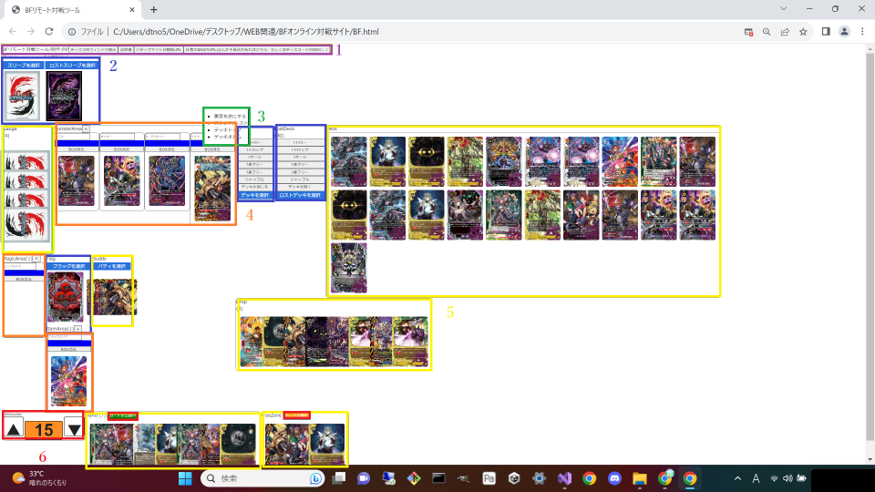
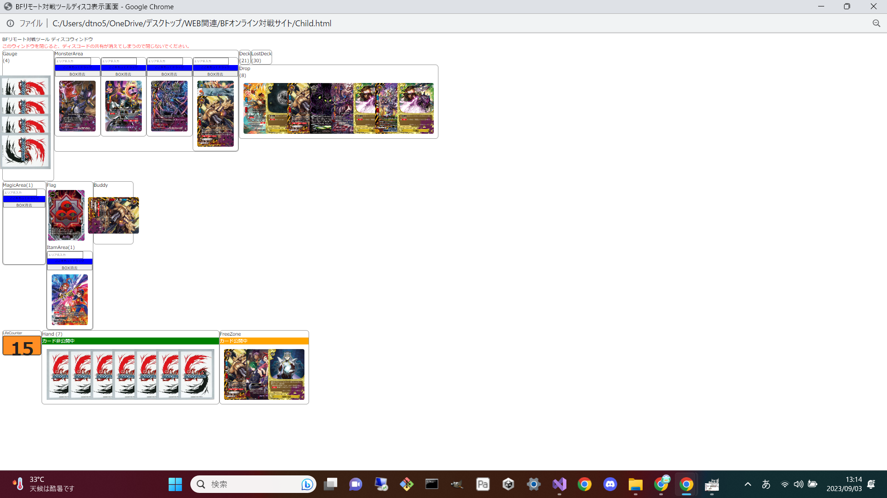
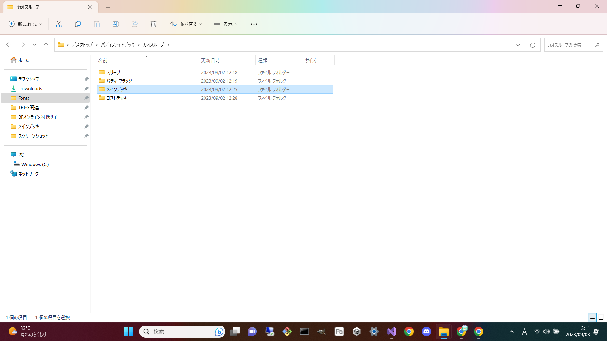
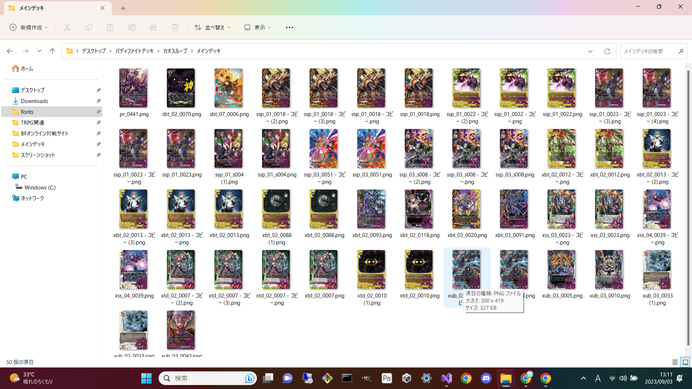

BFリモート対戦ツール説明書
各種URLボタン
それぞれ名前の通りにタブを開きます。 ディスコード用ウィンドウ表示のみ新しくウィンドウとして生成します。 このウィンドウをディスコードの画面共有機能で共有して対戦をします。 (例) 対戦セットアップ
青いボタンを押すと自身のパソコンのフォルダから画像を選択できます。 画像のようにファイルを準備して画像を入れることでデッキ等の準備を行えます。 もう一度対戦をしたいときはお手数ですが、サイトをリロードしてもう一度セットしてください。 (ファイル準備例)  左クリックメニュー
カードを左クリックすることでメニューを開くことができます。 メニューには表裏の反転やレスト/スタンド,カードをデッキに戻すなどの機能があります。エリアBOX
+のマークがあるボタンを推すことでBOXを作れます。 このBOXのなかにカードを入れてください。 並び変えたいときは青い部分をドラッグ、消したいときは白色のボタンを中にカードがない時に押してください。カードエリア
カードをおける部分です。 手札からチャージするときはチャージするカードを裏にしてから置くように気を付けてください。その他
・ライフカウンター そのままです。 ・公開/非公開 公開中の時、相手にカードがみえるよになります。 特にフリースペースの部分をうまく使ってください。 このスペースでルックや、サーチカードの公開等が行えます。 後は何か質問あれば、ディスコードの雑談の方で質問があれば可能な限りお答えします。